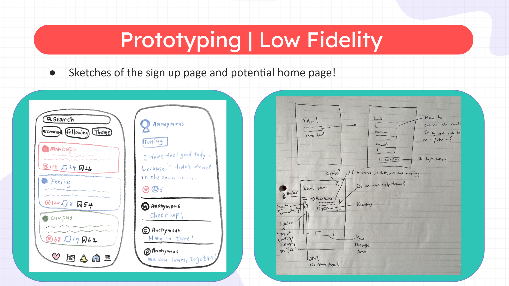
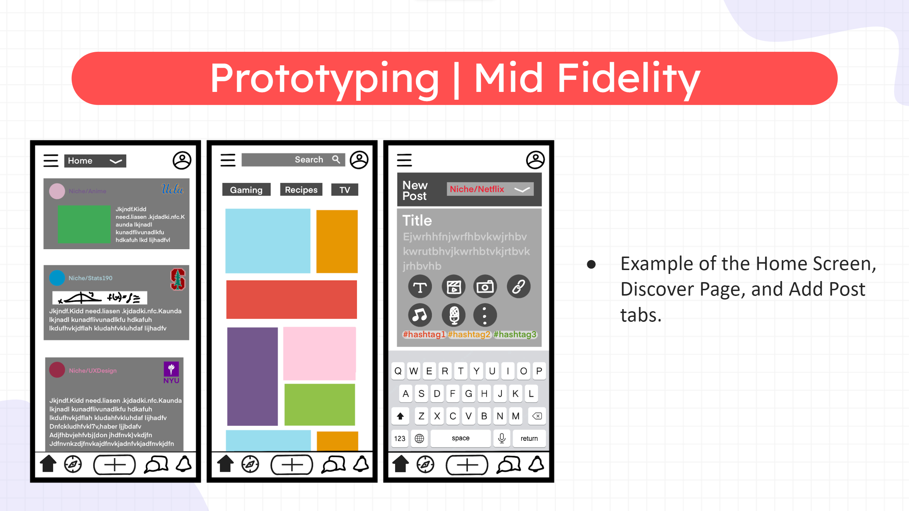
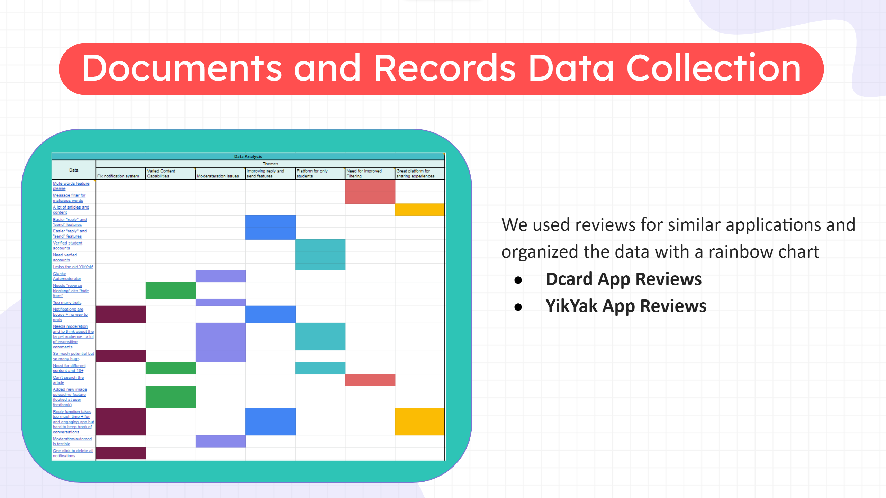
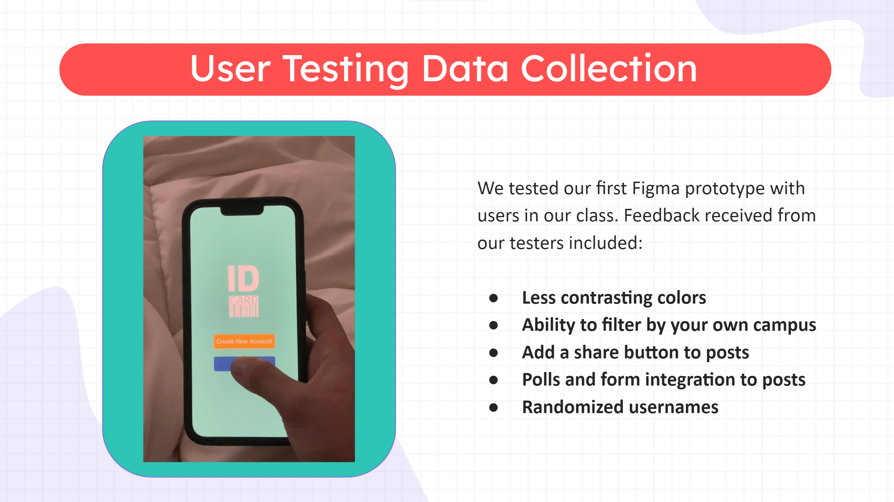

Project information
- Category: App Prototyping
- Project date: December, 2022
- Project URL: www.figma.com
Community Design | ID CARD
When designing with a very specific user group in mind, there is much valuable information to be collected rather than designing for a broad audience. In project we propose ID CARD, an anonymous forum app designed for university students.
The Problem
In a time where education has shifted to the digital age, there is a greatly reduced sense of student community and communication in higher education. Students face difficulties in socializing, asking for help, networking, and many other experiences which should be a vital part of their college experience. Whether this is the effect of the pandemic or a generational wave of Imposter Syndrome, we would like university students to once again make connections in an environment where they feel safe. Anonymous forums exist such as YikYak, but they are tailored for a general audience rather than a university student user group. Moreover, the lack of moderation and the location-based features in these types of platforms have become problematic as it leads to inapproriate content, discrimination, cyberbullying, and more. So how can we provide university students with a safer platform where they can share their thoughts, questions, and ideas?
The Solution
The ID CARD platform allows students to anonymously ask questions and express their thoughts on various categories:
- Clubs/Organizations
- Social Life
- Classes
- Hobbies
- Work
Our platform addresses safety issues by requiring all accounts on the platform to verify their student email address and graduation year, to ensure the users on the platform are all within the target demographic of university students. Each forum on a given topic will only be available as long as a human moderator is actively monitoring it, as automoderators have proved to be inadequate in other similar applications.
Design Process
We conducted an informed design process through community data collection and iterative design. After brainstorming ideas, we created the following low-fidelity prototypes. These prototypes were informed by the analysis of app review data from similar anonymous forums, YikYak and Dcard. Once we had a high fidelity prototype ready, we conducted user studies to improve our final design.
   